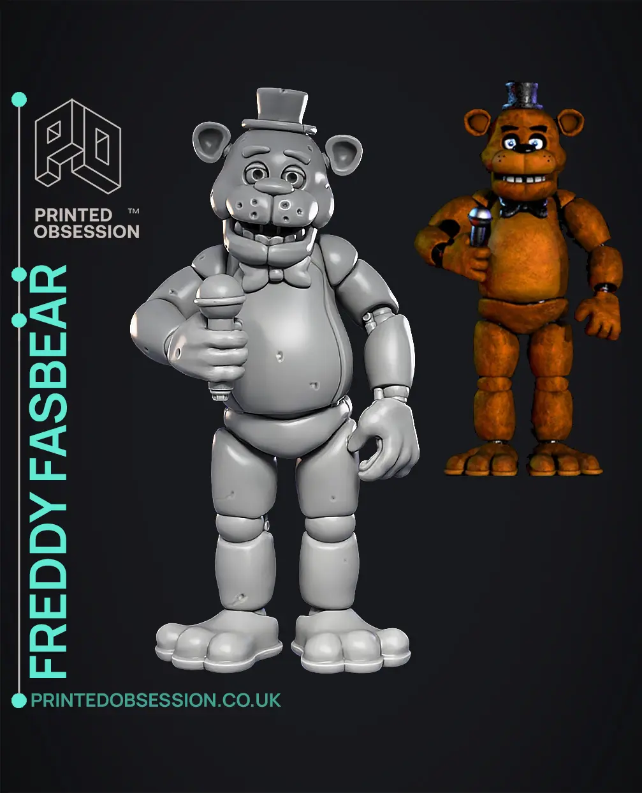

У комп'ютерній графіці 3D-моделювання — це процес розробки математичного представлення будь-якої тривимірної поверхні об'єкта за допомогою спеціалізованого ПЗ. Продукт моделювання є 3D-модель. Вона може бути представлена у вигляді програмного коду або відображена у вюпорті чи вювері, як 3D-модель, а також за допомогою двовимірного зображення, що створюється за допомогою процесу рендерингу. 3D-моделі можуть створюватись вручну або автоматично, у тому числі за допомогою 3D-сканера. Виготовлення моделей вручну є подібним до створення скульптури в пластичному мистецтві.
3D-моделі зараз широко використовуються в 3D-графіці та САП, але їхня історія передує широкому використанню 3D-графіки на персональних комп’ютерах.[1] У минулому багато комп’ютерних ігор використовували попередньо відрендерені зображення 3D-моделей як спрайти, перш ніж комп’ютери могли відтворити їх у реальному часі. Потім дизайнер може бачити модель у різних напрямках і ракурсах, це може допомогти дизайнеру побачити, чи створений об’єкт за задумом у порівнянні з його початковим баченням. Погляд на дизайн таким чином може допомогти дизайнеру або компанії зрозуміти зміни чи вдосконалення, необхідні для продукту.
Моделі оболонок повинні бути різноманітними (не мати отворів або тріщин в оболонці), щоб мати значення як реальний об’єкт. У моделі куба нижня і верхня поверхні куба повинні мати однакову товщину без отворів або тріщин на першому та останньому надрукованому шарі. Полігональні сітки (і, меншою мірою, поверхні поділу) є, безумовно, найпоширенішим зображенням. Набори рівнів є корисним представленням для деформуючих поверхонь, які зазнають багатьох топологічних змін, таких як рідини.
|  | ||
|
|
||

|
||